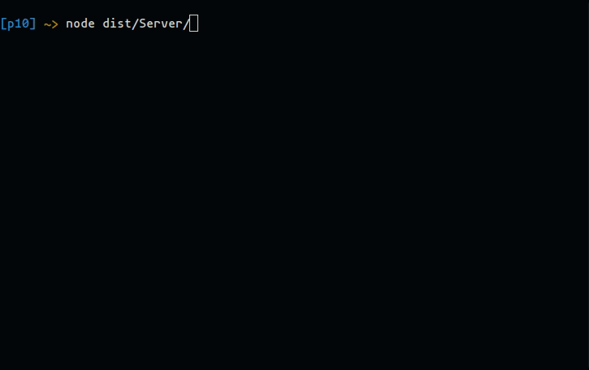

Ver en Github
Github page
Tabla de contenidos
Introducción
A continuación abordaremos el desarrollo de una aplicación para la gestión de notas que funcione bajo el modelo cliente-servidor. Haremos uso de un Gestor de Notas desarrollado anteriormente y nos ocuparemos principalmente de emplear sockets asíncronos y la emisión de eventos para crear un servidor y un cliente.
El cliente se encargará de parsear los comandos mediante el uso del paquete yargs. Y, tras enviar las peticiones al servidor, esperará la respuesta.
Ejemplo de funcionamiento:
- Servidor 
- Cliente
Comunicaciones
Para comunicar el cliente con el servidor emplearemos sockets asíncronos utilizando la clase Socket proporcionada por la librería net de Node.js.
El cliente enviará una petición con la siguiente forma:
export type RequestType = {
type: CommandType; // Acción que se requiere llevar a cabo (add, list, read, remove, edit)
username: string, // Usuario
title?: string, // Título de la nota
body?: string, // Cuerpo de la nota
color?: KnownColors, // Color de la nora
params?: EditObj // Nuevos parámetros para editar una nota
}
El servidor recibirá las peticiones, las procesará, y enviará una respuesta con la forma:
export type ResponseType = {
success: boolean, // Indica si la petición se ha procesado correctamente
output: any, // Salida
};
Cliente
Clase NotesManagerClient
Desarrollaremos una clase que haga de wrapper de un socket. Se encargará de enviar peticiones al servidor y recibir sus respuestas.
Tendrá como atributos:
timer: Un temporizador utilizado para medir el tiempo que tarda en responder el servidor.connection: ObjetoEventEmitterque representará, en este caso, el socket. Cumplir con el principio de inversión de dependencias nos permite testear más fácilmente nuestra clase, ya que podemos utilizar un EventEmitter como un server falso para producir artificalmente los eventos que esperamos.
El constructor de nuestra clase recibe como argumento (opcional) los milisegundos que esperará por la respuesta de un servidor tras enviar una petición. Por defecto son 2000 milisegundos.
Además, adjunta los siguientes handlers:
- Cuando el cliente emite un evento
requestSent(se ha enviado una petición) se inicia el timer. - Cuando el cliente emite un evento
response(se ha recibido un arespuesta) se detiene el timer. - Cuando el timer emite un evento
timeout(se ha agotado el tiempo de espera) se emite un eventotimeout
Y por último, conecta nuestro cliente una nueva instancia de EventEmitter.
Conectar cliente
Para conectar nuestro cliente a un Socket debemos utilizar el método connect. Dicho método recibe como parámetro un EventEmitter, que será el nuevo endpoint del cliente sobre el que emplearemos el método setHandlers.
El método setHandlers adjunta los siguientes handlers a los siguientes eventos sobre una conexión que se la pasa por parámetro:
- Cuando la conexión emita un evento
data, se va guardando en un buffer, si el último caracter del buffer es un salto de línea se emite un eventoresponsey se limpia el buffer. - Cuando la conexión emita un evento
error, el cliente emite un eventoerrorjunto un objetoConnectionError.
Procesar y enviar una petición
El método processRequest recibe como argumentos:
- Un objeto
RequestType: La petición a enviar cb: Callback que recibe un chunk de, como máximo 50 caracteres y unEventEmitter.- opts: Un objeto del tipo
ProcessRequestOptionsque define las opciones para el método. Por defecto la opciónemitRequestSent(indica si se debe emitir un eventorequestSenttras enviar una petición) es verdadera.
Se encarga de transformar la petición a una string en trozoa de, como máximo 50 caracteres, y aplicar el callback pasado por parámetro pasándole el trozo de string y la conexión del cliente.
Nota: en nuestro caso, dicho callback se encargará de enviar cada trozo de dato a través del socket del cliente con connection.write(chunk)
Uso
Partiremos del código utilizado en la aplicación principal del Gestor de Notas previamente desarrollado, ya que nuestro cliente se encargará de parsear las acciones por línea de comandos. Es decir, en caso de, por ejemplo, seleccionar un color no soportado, o introducir comandos no conocidos, la petición no se enviará sino que dicho error será capturado por el código cliente y se mostrará un mensaje informativo al usuario.
- Color no soportado

Como podemos observar, en caso de detectar un error en el cliente, la petición no es enviada.
También definiremos los handlers para los eventos timeout y error emitidos por el cliente:
- En caso de agotarse el tiempo de espera informaremos al usuario y terminaremos el proceso.
client.on('timeout', (connection: net.Socket) => { console.log(fail(`Timeout! Server took too long to respond`)); process.exit(-1); }); - En caso de error imprimiremos el mensaje de error y terminaremos el proceso.
client.on('error', (err) => { console.log(err.toString()); process.exit(-1); });
Una vez hemos parseado los comandos introducidos por el usuario, conectaremos con el servidor. Para ello, todos los comandos del cliente permiten especificar el puerto y host del servidor mediante las opciones --port y --host respectivamente. Donde port es un número entero y host es una string. Los valores por defecto son el puerto 5510 y el host 127.0.0.1.
Conexión con el servidor
client.connect(net.connect(argv.port, argv.host)); Conectamos con el servidorRecibir respuesta del servidor
A continuación, adjuntaremos un handler al eventoresponsedel cliente, dicho handler puede depender del tipo de respuesta que se espera, por ejemplo: En el caso del comando list se espera recibir un array de strings que contiene los títulos de las notas listadas, por lo que debemos verificar que la petición ha sido resuelta correctamente :
client.on('response', (res) => {
if (res.success) {
res.output.forEach((noteTitle: string) => consollog(noteTitle));
} else {
console.log(res.output);
}
});
Mientras que para el resto de comandos basta con imprimir la salida por consola:
client.on('response', (res) => {
console.log(res.output);
});
- Enviar petición
Por último, emplearemos el métodoprocessRequestdel cliente pasándole la petición formada con los parámetros introducidos por el usuario y un callback encargado de enviar la infomación a través del socket:client.processRequest({ type: 'edit', username: argv.username, title: argv.title, params: params, }, (chunk: string, connection: net.Socket) => connection.write(chunk));
Servidor
Nuestro servidor funcionará de forma similar. Servirá de wrapper para un objeto net.Server.
El constructor recibirá como argumentos:
sendingMethod: Callback que recibe un chunk (string) y una conexión (EventEmitter). Define el método utilizado para enviar los trozos de las respuestas.endingMethod: Callback opcional que recibe como parámetro unEventEmitter. Define como debe el servidor terminar una conexión con un cliente.
Además, incializará el gestor de notas (NotesManager) y también adjuntará un handler al evento request. Dicho handler se encargará de procesar la petición, eviarla a la conexión de donde ha venido la petición y, si está definido, invocar al endingMethod para cerrar la conexión con el cliente:
this.notesManager = new NotesManager();
// Handles a 'request' event for each connection
this.on('request', (req, connection) => {
let response = this.processRequest(req);
this.sendResponse(connection, response, req);
if (this.endingMethod) this.endingMethod(connection);
});
Listen
El método listen permite al servidor funcionar en un determinado endpoint. Recibe como parámetros:
endPoint: EventEmitter que representa el nuevo endpoint del servidor.endingProcess: Callback opcional que recibe un EventEmitter. Define las acciones que debe realizar el antiguo endpoint antes de ser sustituido por el nuevo.startingProcess: Callback opcional que recibe un EventEmitter. Define las acciones que debe realizar el nuevo endpoint para empezar a funcionar.
Si se pasa un endingProcess se invoca pasándole el endpoint actual.
Se actualiza el endpoint, se adjuntan los handlers a los eventos de dicho endpoint y por último, si se pasa un startingProcess se ejecuta pasándole como argumento el nuevo endpoint.
listen(endPoint: EventEmitter, endingProcess?: (oldEndpoint: EventEmitter) => void, startingProcess?: (server: EventEmitter) => void) {
if (endingProcess) endingProcess(this.endpoint);
this.endpoint = endPoint;
this.setEndpointHandlers(this.endpoint);
if (startingProcess) startingProcess(this.endpoint);
}
Handlers del endpoint del servidor
El método setEndpointHandlers recibe un EventEmitter y le adjunta los siguientes handlers:
- Para el evento
errorel servidor emite un eventoserverErrorjunto a un objetoServerConnectionERror.
Handlers para conexiones con el cliente
El método setConnectionHandlers recibe un EventEmitter y le adjunta los siguientes handlers:
- Para el evento
errorel servidor emite un eventoconnectionErrorjunto a un objetoConnectionError. - Para el evento
datase guarda el trozo de dato en un buffer y cuando el último caracter es un salto de línea se emite un eventorequestjunto a la request parseada y la conexión de la que provino:let incomingRequest = ''; connection.on('data', (chunk) => { incomingRequest += chunk; if (incomingRequest[incomingRequest.length - 1] === '\n') { this.emit('request', JSON.parse(incomingRequest), connection); incomingRequest = ''; } });
Enviar respuesta a un cliente
El método sendResponse recibe como argumentos una conexión (EventEmitter), una respuesta (ResponseType) y (opcionalmente) la petición a la que se está respondiendo.
Se encarga de convertir la respuesta a una string, dividirla en trozos de 50 caracteres (como máximo) y aplicar (si está definido) el sendingMethod sobre cada trozo de respuesta. Además, emitirá un evento responseSent cuando se termine de enviar la respuesta:
sendResponse(connection: EventEmitter, res: ResponseType, req?: RequestType) {
const splittedRes = JSON.stringify(res).split('');
while (splittedRes.length > 0) {
let chunk = splittedRes.splice(0, 51).join('');
chunk += splittedRes.length === 0 ? '\n' : '';
this.sendingMethod(chunk, connection);
}
this.emit('responseSent', res, req);
}
Procesar una petición
El método processRequest recibe como parámetro la petición a procesar.
Dentro de un bloque try-catch, mediante un switch case, se relizan las acciones indicadas en la petición: añadir, listar, leer, eliminar o editar una nota, en caso de que se ejecute correctamente la petición se guarda la salida en la respuesta, en caso de que se produzca un error se guarda el mensaje de error en la respuesta y se devuelve la misma.
Uso
El puerto por defecto en el que funcionará nuestro server sera el 5510, aunque puede especificarse por línea de comandos: node dist/Server 5512.
Definiremos nuestro objeto de la clase NotesManagerServer pasándole como argumentos un sendingMethod que escribe un trozo de dato en un socket y un endingMethod que se encarga de cerrar la conexión con el cliente.
const server = new NotesManagerServer((chunk: string, connection: net.Socket) => connection.write(chunk),
(connection: net.Socket) => connection.end());
Además, definiremos los handlers para los erroes (errores tanto del cliente como del servidor):
const errorHandler = (err: BasicError) => {
console.log(err.toString());
process.exit(-1);
};
server.on('serverError', errorHandler);
server.on('connectionError', errorHandler)
Y también un handler para cuando se ha enviado una respuesta (evento requestSent) que se encargue de imprimir por pantalla la petición y la respuesta:
server.on('responseSent', (res, req) => {
console.log(warn('Transaction complete:\n') +
chalk.blue('\n Req:') + JSON.stringify(req) +
chalk.green('\n Res:') + JSON.stringify(res)
);
});
Para poner a funcionar nuestro servidor necesitamos un endpoint en el que escuchar, en nuestro caso será un objeto net.Server. Para crearlo pasaremos un handler al método net.createServer que se encargue de aplicar el método NotesManagerServer.setConnectionHandlers sobre la conexión que recibe el callback como argumento:
const serverEndPoint = net.createServer((connection) => server.setConnectionHandlers(connection));
Una vez tenemos un endPoint configurado podemos invocar el método NotesManagerServer.listen pasándole como parámetros el endpoint recién creado, un endingMethod que se encargue de cerrar el viejo endpoint (si existía) y un startingProcess que se encargue de invocar el método net.Server.listen del endpoint sobre el puerto especificado:
server.listen(serverEndPoint, (oldEndpoint: net.Server) => oldEndpoint?.close(), (endPoint: net.Server) => endPoint.listen(port, () => {
console.log(warn(`NotesManager server is running on port ${port}`));
}));
Y nuestro servidor ya estaría listo para escuchar y responder peticiones:
A continuación, un ejemplo de uso de la aplicación con un servidor y dos clientes, uno de los clientes alojado en la misma máquina que el servidor y otro en otra máquina de lam isma red local.
- La terminal izquierda es el cliente en la misma máquina que el servidor. En dicho cliente se listan las notas que el servidor tiene guardadas, por lo que se puede observar como se van añadiendo las notas que el otro cliente envía.
- La terminal de la derecha es el servidor
- La terminal de la esquina inferior derecha es un cliente en otra máquina de la misma red local. Desde dicho cliente se ejecuta un script que añade notas al servidor.

Testing
Gracias a que las clases diseñadas son wrappers, se facilita el proceso de hacer pruebas unitarias, ya que podemos hacer pasar un objeto EventEmitter por un servidor o un cliente indistintitamente.
Por ejemplo, para testear si un cliente puede procesar correctamente la respuesta de un servidor simplemente debemos crear un EventEmitter, conectar un cliente a dicho EventEmitter y emitir eventos data con los trozos de información que llevan la respuesta:
it('Should emit a response event once it gets a complete response', (done) => {
const socket = new EventEmitter();
const client = new NotesManagerClient();
client.connect(socket);
client.on('response', (res) => {
expect(res).to.be.eql({ 'success': 'true', 'output': 'NoteOne', 'curr': 26 });
done();
});
socket.emit('data', '{"success": "true", "output": "NoteOne"');
socket.emit('data', ', "curr": 26}');
socket.emit('data', '\n');
});